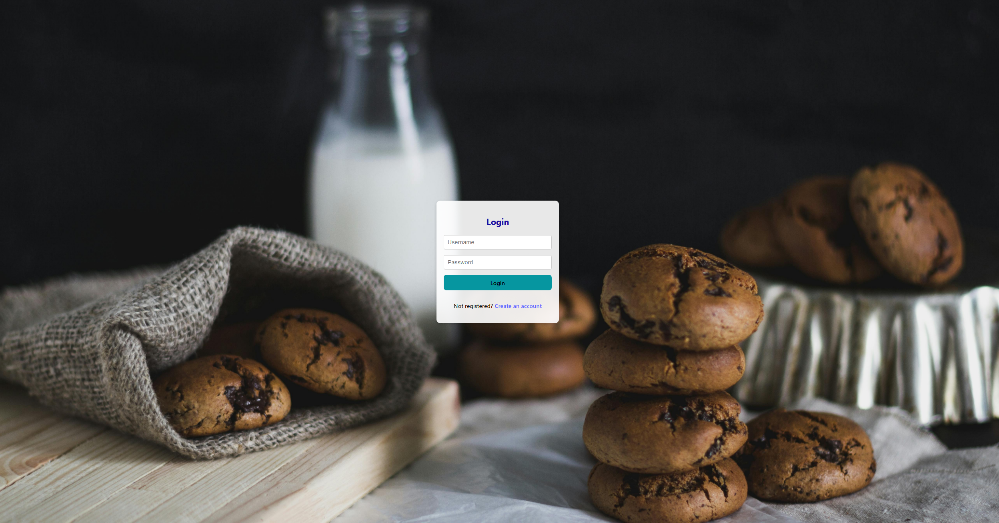
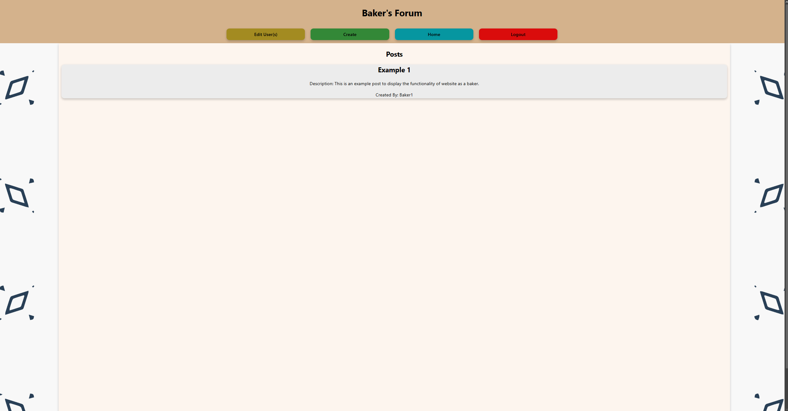

MERN is an acronym, standing in place for multiple different technologies that work together, hence the name MERN Stack. It stands for MongoDB, Express.js, React.js, and Node.js.
MongoDB is a NoSQL database that stores data in a flexible, JSON-like format. Express.js is a server-side web application framework.
Node.js is a JavaScript runtime that allows developers to execute JavaScript beyond the browser. React.js is used for the front-end scripting and design.
This project utilized all of these technologies to create a full stack web application. The goal of this project was to create a simple web applicatiob that had
full CRUD functionality with at least two users (i.e. an admin and a regular user) and appealing design. I chose to create
a simple baking blog application. There is a decent amount of functionality with what a user can do. Depending on the optional code on the registration page, a user can either be an admin, baker, or customer.
Admins have full control over the application and its' users, including the permissions to read, create posts, delete all posts, comment, and edit users. Bakers have the permissions to read, create posts,
comment on any post, but only permission to delete posts they have published. Customers have the most limited permissions, being restricted to only reading and commenting on posts.


This was a very difficult project, as I had to focus on not only front-end design, but also back-end development, database management, and connecting all of these different technologies together. I had to learn a lot of new concepts and technologies to complete this project, and I had to troubleshoot a lot of issues that arose from the integration of these technologies. The most challenging part of this was probably making everything connect. I struggled a lot on connecting the database to the back-end, and then connecting the back-end to the front-end. It took a lot of trial and error to get everything working together, and I had to do a lot of research to figure it out. That is not to say that the front-end design was easy either, nor was the back-end development when handling all of the different use cases. It was much more difficult than anything I had worked on up to that point, and it was a very rewarding experience to see everything come together in the end. I am very proud of this project, and I learned a lot from it.